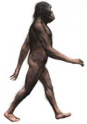
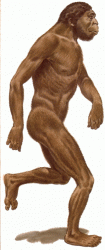
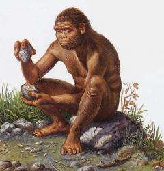
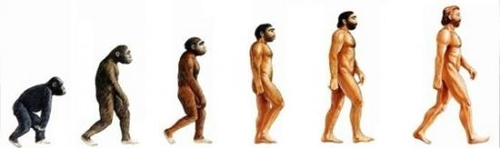
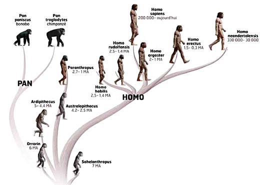
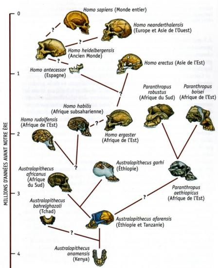

MACLASSE.COM

l'Histoire (et donc la première période la Préhisoire) débute avec l'apparition de l'Homme, homo en latin.
Mais comment définit-on un Homme?
 Par exemple, les scientifiques ont décidé que le personnage de gauche, un australopithèque, ne fait pas partie de la famille homo, alors que le personnage de droite, homo habilis est le premier Homme.
Pourquoi? Ce choix ne se fait pas sur des critères anatomiques (poil, cerveau, corps penché...), mais sur trois critères précis:
- la bipédie : il faut marcher sur ses deux pieds.
- Un langage articulé : la langue et la machoire permettent de faire des sons complexes, et pas seulement des grognements comme les singes.
- Etre capable de fabriquer des outils : le galet aménagé est le premier outil fabriqué par l'Homme.
Australopithèque possède les deux premiers critères (il est bipède et possède un langage articulé), mais homo habilis est le premier à réussir à créer un outil, même rudimentaire.
homo habilis est donc le premier Homme, homo sapiens (l'Homme actuel), étant le dernier Homme représenté sur la frise à droite ci-dessous.
Cette représentation montre bien le long chemin de l'évolution que l'Homme a accompli, pourtant, elle a un grand défaut, elle induit une erreur courante chez les enfants (et même les adultes). Elle laisse supposer que le singe s'est transformé en australopithèque, et ainsi de suite jusqu'à l'apparition de l'homme moderne, homo sapiens, qui descendrait directement de l'homo précédent.
Voici une représentation plus adaptée:
Un ancêtre commun, encore inconnu, a donné toutes les différentes familles, le singe d'un côté, et les homo de l'autre. L'homme ne descend donc pas du singe comme beaucoup le pense, mais il est en est plutôt un cousin éloigné.
De même, australopithèque, homo habilis et homo erectus ne descendent pas les uns des autres directement, puisqu'ils sont tous contemporains, c'est à dire qu'à un moment donné, ils ont tous vécu à une même époque sur la planète, mais ils ont disparu à des périodes différentes.
L'évolution est donc un phénomène très lent, qui se remarque sur des milliers de générations et on n'a pas encore retrouvé tous les "chainons manquant", c'est à dire toutes les espèces qui ont jalonné l'évolution de l'homme.
Voici un dernier schéma qui montre donc le travail des scientifiques sur l'évolution de l'homme, à l'aide des crânes et des fragments de crâne retrouvés lors des fouilles géologiques. Les points d'interrogation représentent les fameux "chainons manquant", dont on n'a pas encore retrouvé d'ossements dans le sol.
Mentions légales / Qui sommes-nous ? / Plan du site
Nos matières : français - mathématiques - histoire - sciences - arts visuels - geographie